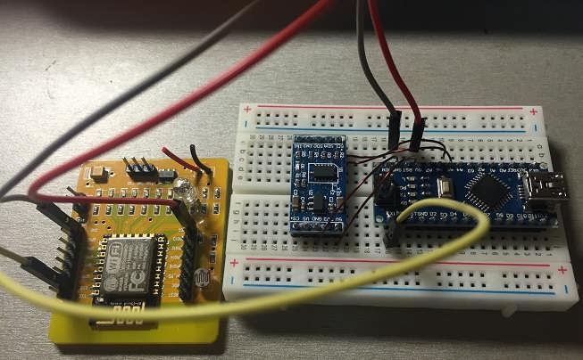
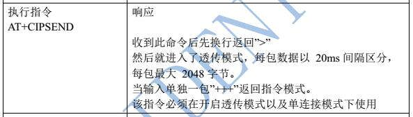
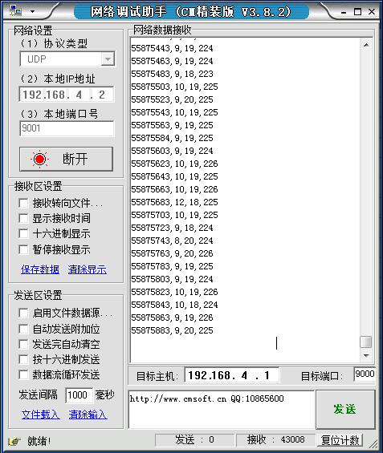
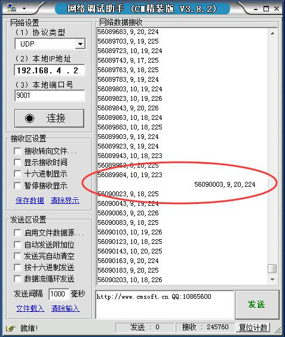

在前三篇中，已经成功验证了各个环节的可行性。现在需要进一步精化——使用WIFI来传输加速度数据。说到嵌入式系统上的WIFI，那么我肯定直接想到了ESP8266咯。这是一个非常棒的东西，我已经有好几篇文章介绍这个模块了。
=======================阶段一：电路连线===================
首先，需要搭建起硬件环境。经过各种尝试，我确定了最终的硬件环境——一个ADXL345加速度传感器，一个Arduino Nano和一个ESP8266。除了必要的电源线外，总共需要3根导线来连接引脚，分别如下：
（1）把Arduino的A4引脚和ADXL345的SDA引脚相连；
（2）把Arduino的A5引脚和ADXL345的SCL引脚相连；
（3）把Arduino的D1（也就是TX）引脚与ESP8266的RXD引脚相连。
我搭的电路实物如下图：

你可能会觉得很奇怪，为什么Arduino到ESP8266只有一条线的单向通信？其实这个决定也是在我各种纠结之后做的。原因大致有：
（1）如果硬件稳定、软件正确，那么是不可能出现错误；
（2）如果运行时出现了错误，那么就算能够通过增加一条串口线读取到，也基本无法恢复。
（3）如果要读取ESP8266的返回内容，那么发送数据包的过程就只能是同步的了（因为Arduino的串口的缓冲区很小），而同步的话，就无法做到采集频率的均匀。
什么叫“无法做到采集频率的均匀”？这个问题同时决定了软件的结构，所以我单独放在下一个阶段中细说。
========================阶段二：难点======================
事实证明，这个任务的难度远远超出我的想象。我本来以为，读一次加速度数据，就用WIFI发送一次，不断循环，不就OK了？可是后来发现，如果真的这么做，那么采样频率会非常低，而且采样的时间间隔非常不稳定。我想到这应该是ESP8266的发送过程时间长、耗时不确定有关系。后来我查阅了ESP8266的AT指令集文档，在文档中发现如下内容：

确定了问题确实是由数据包发送耗时导致的。怎么解决？于是我各种搜索，可是这种问题互联网几乎帮不了你，只能靠自己的思考、试验。
我想，每次采样产生的数据量很少，但是采样频率很高；而每次发送数据包的数据量很大，但发送频率很低。解决这种问题基本都需要使用缓冲区。只有发送数据包的吞吐量能够大于采集数据包的吞吐量，那么发送数据就能够跟得上。
那好，现在我们就放一个缓冲区。于是我以比较高的频率采集数据，把采集到的数据放入缓冲区，然后继续采集。那么何时把缓冲区中的数据“倒”给ESP8266呢？
常规的做法就是当缓冲区满的时候把缓冲区中的数据“倒”到ESP8266中，命令其发送。我一开始也是这么做的，但是后来发现问题依然很严重——“倒”数据并发送的过程非常慢，需要100ms左右。我想问题应该是发送过程太缓慢，毕竟这么多无线设备的信号要在同一个空间传输，肯定需要协调，那就做不到实时性。我这才想到了以异步的方式发送数据。所谓异步，说白了就是直接把发送命令和发送数据通过串口丢给ESP8266，然后就立刻返回。这样，“倒”数据与发送的过程基本就只有串口传输数据的时间了。而至于ESP8266的返回结果，就管不了了，正常情况下不会出错的，因为如果真的出了什么错误，即使Arduino知道也做不了什么处理来修正。这也就是“阶段一”中所谈及的“单向通信”。换句话说，我通过牺牲Arduino检测到ESP8266异常的能力，换取了异步发送数据包的能力。在相对比较简单稳定的嵌入式系统中是值得做的。
我以为问题就解决了，没想到问题只是减轻了，但是依旧存在。现在问题的现象是这样的——采集到的数据，一开始都间隔比较均匀的时间，然后突然有某个数据的采集时间明显偏晚。我一计算，发现了问题所在——串口传输速率。
假设我以50Hz的速率采集数据，每次采集到的数据长25字节，放入缓冲区中。缓冲区大小为500字节。那么，开始时的500/25-1=19条数据直接放入缓冲区中，几乎不需要时间，所以完全有能力保证两次采样的间隔为20ms（1s/50Hz=20ms）。当采集到第20条数据后，发现缓冲区满了，于是通过串口把缓冲区中的内容写入ESP8266中并命令其发送。那么串口至少需要传输500字节（而事实上，还有传输命令，所以传输字节数更多）。Arduino比较稳定的波特率最高是115200，那么传输速度最多是11520字节/秒。传输500字节需要500/11520=43.4毫秒>20ms，所以第21条数据与第20条数据的时间间隔至少是43.4毫秒，所以明显偏晚。
根本问题已经确定——串口传输速率有限。如何解决呢？一种简单的想法就是缩小缓冲区的大小。但是缓冲区又不能太小，因为缓冲区太小的话，发送数据包的频率就会增加，发包的间隔太小的话就会出错。为了量化，可以进行计算。假设缓冲区的大小为x字节，那么串口把缓冲区中的数据“倒”到ESP8266中，需要x/11520秒，为了不耽误采样，所以必须满足x/11520<1/50，得到x<230.4字节。另一方面，每秒钟产生采样数据50*25=1250字节，那么每x/1250秒就需要“倒”一次数据，并促使ESP8266发送数据包。而实测发现，ESP8266的发包间隔不能小于100ms，所以必须满足x/1250>0.1，即x>125。综上，125<x<230.4。你会发现，x的上限和下限并没有数量级上的差距，因此容错性较低。一旦采样频率提高或者采样数据的长度增加，那么立刻就无法满足需求了。
=====================阶段三：解决方案====================
仔细思考上述过程，会发现这么一个可以改进的地方。当缓冲区还没满时，只需要把数据放入缓冲区，几乎不需要时间，所以有20ms的时间在忙等，白白浪费。而当缓冲区满时，却要通过串口发送这么多数据，又来不及。是否能够把时间调度优化一下，更加合理地使用时间？所以，解决方案的基本思路就是——即使缓冲区没有满，也“尽量”通过串口把数据发送到ESP8266中。这样就能把本来忙等的时间用来工作，以减轻本来串口发送数据的开销。
那么何为“尽量”呢？就是——只要能向ESP8266写入数据，那么就写入数据，能写多少写多少。
这里有两个问题需要解决。
首先，何时能够向ESP8266写入数据？我的办法是，用一个变量记录上一次向ESP8266写入数据的时间，如果现在的时间与上次的时间差距足够大，那么就认为可以写入数据（我定为0.5秒，绝对够用了）。
其次，能够写入多少？ESP8266发送数据包的过程是这样的——首先告诉ESP8266要发送的字节数，然后向ESP8266发送数据。当发送的数据量达到了指定的字节数后，ESP8266就自动发送这么多数据，而把之后的数据直接忽略。我的办法就是先判断ESP8266是否已经进入了发送数据的状态，如果还没有，则发送“开始发送数据包”的命令，而且每次都告诉ESP8266我要发送1024字节，然后写数据内容。如果数据足够多了（但还没达到1024字节），为了防止接下来的数据放不下，就要向ESP8266发送空格，直到凑满1024字节。此时，ESP8266会自动进入发送状态，我也把当前状态标记为“未进入发送状态”。
=======================阶段四：最终代码===================
其实，再多的语言也不够代码来的精炼，这里直接贴上代码。代码分为Adafruit_Sensor.h、Adafruit_ADXL345_U.h、Adafruit_ADXL345_U.cpp、ESP8266.h、ESP8266.cpp和主程序wirelessADXL345.ino共6个文件。其中，Adafruit_Sensor.h、Adafruit_ADXL345_U.h和Adafruit_ADXL345_U.cpp是Adafruit对ADXL345的封装，属于开源项目，代码可以直接从《Arduino使用ADXL345加速度传感器模块》中获得。ESP8266.h和ESP8266.cpp是我针对这个项目对ESP8266的封装，只适合快速、异步地发送数据的场景。
ESP8266.h：
#ifndef ESP8266_H
#define ESP8266_H
#include <Arduino.h>
//第一层缓冲的大小（占用Arduino的内存）
#define ESP8266_BUFFER_SIZE 512
//第二层缓冲的大小（占用ESP8266的内存），同时也是每个UDP数据包的大小
#define ESP8266_PACKET_SIZE 1024
//两次实际发送直接的最小时间间隔
#define MIN_SEND_INTERVAL 300
class ESP8266
{
private:
//上次发送UDP包的时间
uint32_t m_last_send_time;
//第一层缓冲的缓冲区
char m_buffer[ESP8266_BUFFER_SIZE];
//第一层缓冲区当前的长度
int m_buf_len;
//第二次缓冲最小空余量
int m_min_empty_size;
//第二层缓冲区当前数据量
int m_current_data_len;
public:
//设置最小空余量，一般是每次发送的数据片段的最大长度
ESP8266(int p_min_empty_size);
//重启
void restart();
//设置命令回显
void setEchoEnable(bool enable);
//设置模式
void setMode(int p_mode);
//建立接入点，SSID和密码
void setupAP(char* p_ssid,char* p_pwd=0);
//开启UDP广播连接，本地端口和目标端口
void openUDP(unsigned int p_in_port,unsigned int p_out_port);
//发送数据（不一定立刻发送，可能只是放入第一层缓冲）
void sendData(char* p_data);
private:
//数据压入esp8266中（第二层缓冲）
void pushData(char* p_data);
};
#endif
ESP8266.cpp：
#include "ESP8266.h"
ESP8266::ESP8266(int p_min_empty_size)
{
m_last_send_time=millis();
memset(m_buffer,0,ESP8266_BUFFER_SIZE);
m_buf_len=0;
m_min_empty_size=p_min_empty_size;
m_current_data_len=-1;
}
void ESP8266::restart()
{
//发送 AT指令
Serial.println("AT+RST");
delay(3000);
}
void ESP8266::setEchoEnable(bool enable)
{
//发送 AT指令
Serial.print("ATE");
if(enable)
Serial.println("1");
else
Serial.println("0");
delay(500);
}
void ESP8266::setMode(int p_mode)
{
//发送AT指令
Serial.print("AT+CWMODE=");
Serial.println(p_mode);
delay(500);
}
void ESP8266::setupAP(char* p_ssid,char* p_pwd)
{
//见手册
int t_enc=(p_pwd==0?0:4);
if(p_pwd==0)
p_pwd="";
//发送AT指令
Serial.print("AT+CWSAP="");
Serial.print(p_ssid);
Serial.print("","");
Serial.print(p_pwd);
Serial.print("",5,");
Serial.println(t_enc);
delay(2000);
}
void ESP8266::openUDP(unsigned int p_in_port,unsigned int p_out_port)
{
//发送AT指令
Serial.print("AT+CIPSTART="UDP","255.255.255.255",");
Serial.print(p_out_port);
Serial.print(",");
Serial.print(p_in_port);
Serial.println(",0");
delay(1000);
}
void ESP8266::sendData(char* p_data)
{
//当前毫秒数
uint32_t t_current=millis();
uint32_t t_delta;
//如果溢出
if(t_current<m_last_send_time)
t_delta=t_current+(0xFFFFFFFF-m_last_send_time);
else
t_delta=t_current-m_last_send_time;
//如果距离上次时间发包的时间不够长，则先放入第一层缓存
if(t_current-m_last_send_time<MIN_SEND_INTERVAL)
{
//内容的长度
int t_len=strlen(p_data);
//第一层缓存剩余空间
int t_rest=ESP8266_BUFFER_SIZE-m_buf_len;
//为防止内存溢出
t_len=min(t_len,t_rest);
int t_i;
//复制入第一层缓冲
for(t_i=0;t_i<t_len;t_i++)
m_buffer[m_buf_len+t_i]=p_data[t_i];
m_buf_len+=t_len;
}
else
{
//字符结尾
m_buffer[m_buf_len]=0;
//先把第一层缓冲区中的内容放入第二层缓冲
pushData(m_buffer);
//清空第一层缓冲
m_buf_len=0;
//再把要发送的数据放入第二层缓冲
pushData(p_data);
}
}
void ESP8266::pushData(char* p_data)
{
//当前还没有开始发送，则开始发送
if(m_current_data_len==-1)
{
//发送AT指令
Serial.print("AT+CIPSEND=");
Serial.println(ESP8266_PACKET_SIZE);
delay(5);
m_current_data_len=0;
}
//第二层缓冲剩余空间
int t_empty_len=ESP8266_PACKET_SIZE-m_current_data_len;
//要放入第二层缓冲的数据量（此处可能有数据丢失风险，所以要选好宏定义）
int t_len=min(t_empty_len,strlen(p_data));
//数据移入二级缓冲
int t_i;
for(t_i=0;t_i<t_len;t_i++)
Serial.print(p_data[t_i]);
m_current_data_len+=t_len;
t_empty_len-=t_len;
//空闲空间不足
if(t_empty_len<m_min_empty_size)
{
//空闲空间用空格填满，自动发送
int t_i;
for(t_i=0;t_i<t_empty_len;t_i++)
Serial.print(' ');
//回到起点
m_current_data_len=-1;
//更新上次发送时间
m_last_send_time=millis();
}
}
wirelessADXL345.ino：
#include "Adafruit_ADXL345_U.h"
#include "ESP8266.h"
//本地UDP端口
#define UDP_INPUT_PORT 9000
//目标UDP端口
#define UDP_OUTPUT_PORT 9001
//采样数据的格式
#define SAMPLE_FORMAT "%ld,%d,%d,%dn"
//每条采样数据最长长度
#define SAMPLE_MAX_LEN 32
//ADXL345对象，引脚SCL-A5,SDA-A4
Adafruit_ADXL345_Unified g_adxl345(0);
//ESP8266对象，TX1引脚接ESP8266的RX引脚
ESP8266 g_esp8266(SAMPLE_MAX_LEN);
//上次barrier的时间
uint32_t g_barrier_last_time;
//初始化barrier
void barrier_init()
{
g_barrier_last_time=millis();
}
//延时，直到与上次调用barrier的时间相差p_interval毫秒
void barrier(uint32_t p_interval)
{
while(true)
{
//当前毫秒数
uint32_t current=millis();
uint32_t delta;
//如果溢出
if(current<g_barrier_last_time)
delta=current+(0xFFFFFFFF-g_barrier_last_time);
else
delta=current-g_barrier_last_time;
//相差了至少p_interval
if(current-g_barrier_last_time>=p_interval)
break;
}
g_barrier_last_time+=p_interval;
}
void setup(void)
{
//================ADXL345初始化====================
g_adxl345.begin();
//量程为16g
g_adxl345.setRange(ADXL345_RANGE_16_G);
//采样频率100Hz
g_adxl345.setDataRate(ADXL345_DATARATE_100_HZ);
//================ESP8266初始化===================
//请务必保证ESP8266的波特率与此相同
Serial.begin(115200);
//ESP8266重启
g_esp8266.restart();
//关闭回显
g_esp8266.setEchoEnable(true);
//模式2，即作为AP
g_esp8266.setMode(2);
//建立AP，SSID为wirelessADXL345，密码为zhoujianshi
g_esp8266.setupAP("wirelessADXL345","zhoujianshi");
//开启UDP广播
g_esp8266.openUDP(UDP_INPUT_PORT,UDP_OUTPUT_PORT);
//==================barrier初始化===================
barrier_init();
}
void loop(void)
{
//采样内存分配
char t_sample_buf[SAMPLE_MAX_LEN];
memset(t_sample_buf,0,SAMPLE_MAX_LEN);
//获取毫秒计的时间
uint32_t t_time=millis();
//x加速度
int16_t t_x=g_adxl345.getX();
//y加速度
int16_t t_y=g_adxl345.getY();
//z加速度
int16_t t_z=g_adxl345.getZ();
sprintf(t_sample_buf,SAMPLE_FORMAT,t_time,t_x,t_y,t_z);
g_esp8266.sendData(t_sample_buf);
barrier(20);
}
装置上电之后，大约10秒后，电脑可以搜索到一个叫做”wirelessADXL345″的无线热点，密码是”zhoujianshi”。连接上该热点，在9001端口接收UDP数据包即可收到单片机发来的数据，如图：

其中192.168.4.2就是ESP8266给电脑分配的IP地址。数据分为4列，第1列是单片机上电至今的毫秒数，第2、3、4列分别是x、y、z三轴的加速度读数。
不过仔细看，会发现数据中存在这样的情况：

也就是这一行前面有很多空格。其实如果仔细看了单片机的代码的话就会明白，单片机发现当二级缓存的剩余空间不够时，自动填写空格，刚好填满数据包，使其发送。这段空格就是自动填补的结果。
====================阶段五：专用接收软件==================
上面也看到了，虽然通用的接收软件可以收到数据，但是数据中是有空格的。另外，我们可能还希望对读到的数据进行一定的修正处理，比如加上一个偏移量或者乘以一定的缩放比例。于是我用C#写了一个接收端的程序，这个程序在9001端口上接收数据包，并去除其中的空格，把单片机的时间转化成Unix时间戳，并且可以为x,y,z三个读数进行线性运算（可以用来修正数值）。代码如下：
using System;
using System.Collections.Generic;
using System.Linq;
using System.Text;
using System.Net.Sockets;
using System.Net;
using System.IO;
using System.Threading;
namespace ZhouJianShi
{
class Program
{
static void Main(string[] args)
{
//=====================参数处理======================
if (args.Length < 10)
{
Console.WriteLine("usage: <localIP> <localPort> <outputFile or Console> <offsetX> <scaleX> <offsetY> <scaleY> <offsetZ> <scaleZ> <isRawData>");
return;
}
//本地IP
string localIP = args[0];
//本地端口
int localPort = Int32.Parse(args[1]);
//输出文件，如果为Console则输出到控制台
string outputFile = args[2];
//对原始数据进行偏移与尺度变换
double offsetX = Double.Parse(args[3]);
double scaleX = Double.Parse(args[4]);
double offsetY = Double.Parse(args[5]);
double scaleY = Double.Parse(args[6]);
double offsetZ = Double.Parse(args[7]);
double scaleZ = Double.Parse(args[8]);
//是否显示原始数据
bool isRawData = Boolean.Parse(args[9]);
//====================初始化==========================
ADXL345Recorder recorder = new ADXL345Recorder(localIP, localPort, outputFile);
recorder.setOffsetX(offsetX);
recorder.setScaleX(scaleX);
recorder.setOffsetY(offsetY);
recorder.setScaleY(scaleY);
recorder.setOffsetZ(offsetZ);
recorder.setScaleZ(scaleZ);
recorder.setIsRawData(isRawData);
//====================交互式操作=====================
while (true)
{
Console.WriteLine("Press any key to start recording...");
Console.ReadKey();
Console.WriteLine("Recording...");
recorder.start();
Console.WriteLine("Press any key to stop recording...");
Console.ReadKey();
recorder.stop();
Console.WriteLine("stopped!");
}
}
}
class ADXL345Recorder
{
//数据包大小
private const int PACKAGE_SIZE=2048;
//本地UDP端口号
private const int LOCAL_PORT=9001;
//远程UDP端口号
private const int REMOTE_PORT=9000;
//wirelessADXL345给本机分配的IP
private string localIP;
//wirelessADXL345的数据包的目标端口
private int localPort;
//UDP socket
private Socket socket;
//文件名
private string fileName;
//写入的文件
private StreamWriter file;
//Unix时间戳的基准
private DateTime timeBase = DateTime.Parse("1970-1-1");
//x,y,z修正值
private double offsetX, offsetY, offsetZ;
//x,y,z尺度比例
private double scaleX, scaleY, scaleZ;
//是否显示原始数据（否的话则输出单位为m/s^2的合加速度数据）
private bool isRawData;
//远程对端
private EndPoint remoteEndPoint=new IPEndPoint(IPAddress.Broadcast,REMOTE_PORT);
//接收线程
private Thread receiveThread;
//运行标志
private volatile bool running;
//与单片机时间差
private long deltaTime = 0;
public ADXL345Recorder(string localIP, int localPort, string fileName)
{
this.localIP = localIP;
this.localPort = localPort;
this.fileName = fileName;
}
public void setOffsetX(double offset)
{
this.offsetX = offset;
}
public void setOffsetY(double offset)
{
this.offsetY = offset;
}
public void setOffsetZ(double offset)
{
this.offsetZ = offset;
}
public void setScaleX(double scale)
{
this.scaleX = scale;
}
public void setScaleY(double scale)
{
this.scaleY = scale;
}
public void setScaleZ(double scale)
{
this.scaleZ = scale;
}
public void setIsRawData(bool isRawData)
{
this.isRawData = isRawData;
}
public void start()
{
if (!fileName.Equals("Console"))
{
//覆盖文件打开
file = new StreamWriter(fileName, false);
}
//创建本地端点
IPEndPoint localEndPoint = new IPEndPoint(IPAddress.Parse(localIP),localPort);
socket = new Socket(AddressFamily.InterNetwork, SocketType.Dgram, ProtocolType.Udp);
//绑定
socket.Bind(localEndPoint);
//创建接收线程
receiveThread = new Thread(new ParameterizedThreadStart(receiveThreadFunc));
running = true;
deltaTime = 0;
//启动线程
receiveThread.Start();
}
public void stop()
{
running = false;
}
public void receiveThreadFunc(object param)
{
//数据包
byte[] package=new byte[PACKAGE_SIZE];
while(running)
{
//接收数据包并去掉尾部空格
int count=socket.ReceiveFrom(package, ref remoteEndPoint);
string content = System.Text.Encoding.Default.GetString(package, 0, count).TrimEnd();
//分行
string[] lines=content.Split('n');
for (int i = 0; i < lines.Length;i++ )
{
//分列
string[] items = lines[i].Split(',');
long time = long.Parse(items[0]);
//确定单片机时间与unix时间的差
if(deltaTime==0)
deltaTime = currentUnixTimestamp() - time;
//单片机时间转换成unix时间
time += deltaTime;
double accX = (Double.Parse(items[1]) + offsetX)*scaleX;
double accY = (Double.Parse(items[2]) + offsetY)*scaleY;
double accZ = (Double.Parse(items[3]) + offsetZ)*scaleZ;
string line;
if (isRawData)
line = time + "," + accX + "," + accY + "," + accZ;
else
{
//得到合加速度
double acc = Math.Sqrt(accX * accX + accY * accY + accZ * accZ) * (0.004 * 9.8);
line = time + "," + acc;
}
if(file==null)
Console.WriteLine(line);
else
file.WriteLine(line);
}
}
if (file != null)
file.Close();
socket.Close();
}
//获取Unix时间戳
private long currentUnixTimestamp()
{
return (long)DateTime.Now.Subtract(timeBase).TotalMilliseconds;
}
}
}
参数里面，localIP一般就是9001（在单片机里写死的），localPort一般是192.168.4.2（ESP8266分配的，ESP8266自身是192.168.4.1，如果有多个设备接入的话，IP地址递增）。outputFile就是输出的目标文件，比如D:/1.txt，当然，也可以输入“Console”，这样，结果就会打印到控制台中。
offsetX和scaleX是用来对单片机发送的x轴原始读数进行修正用的。计算公式为
x' = (x + offsetX) * scaleX
同样地，也有
y' = (y + offsetY) * scaleY z' = (z + offsetZ) * scaleZ
最后一个参数isRawData，如果为true，则表示输出x,y,z三轴读数（经过修正），如果为false,则输出以m/s2为单位的加速度值。